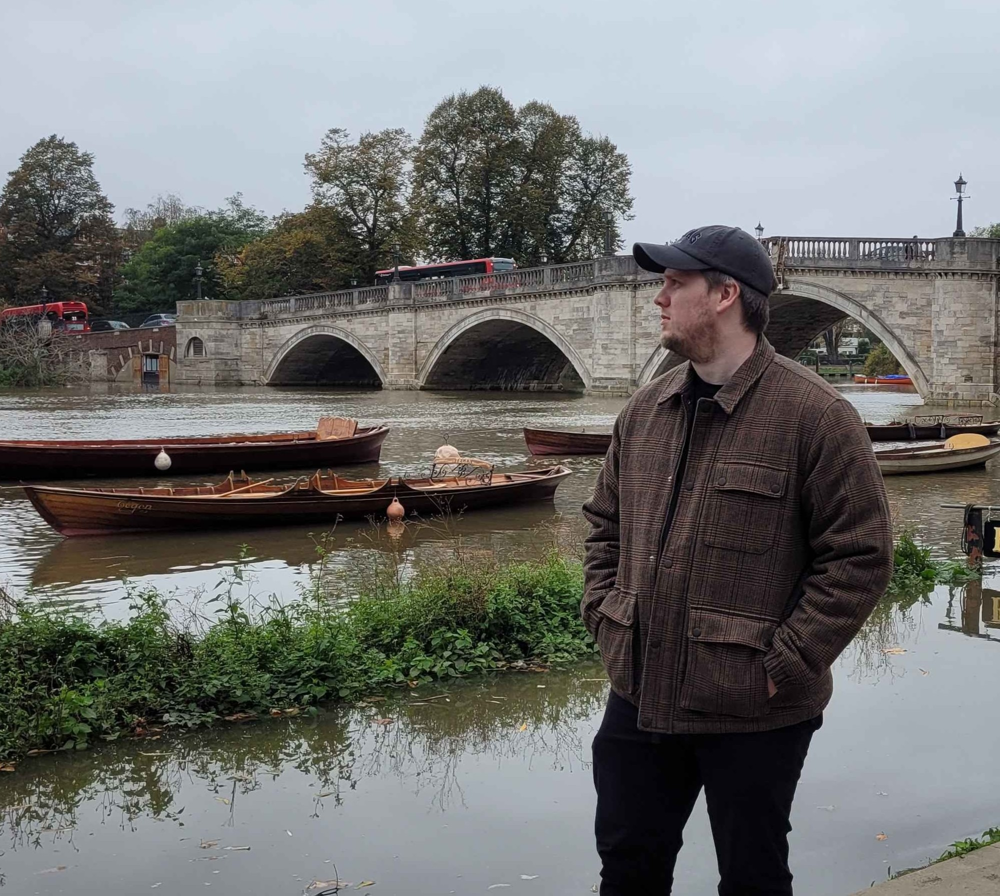

Alexander Curran-Rooke
Concept Artist
I’m Alexander Curran-Rooke, a concept artist operating out of London. My core focus is bringing grounded, functional design to sci-fi and fantasy worlds.
Whether I am designing ancient monolithic structures, retro-futuristic weaponry, or the aerodynamic chassis of an alien race car, I approach every asset with 'believability' in mind. I use a hybrid 2D/3D workflow to ensure that every vehicle, prop, and environment not only looks compelling in a keyframe but works logically in a 3D production pipeline.
I've recently contributed designs for environments and hero props to indie titles like SCP: Fragmented Minds and am always looking for the next compelling world to help build.

a.c.rooke@outlook.com